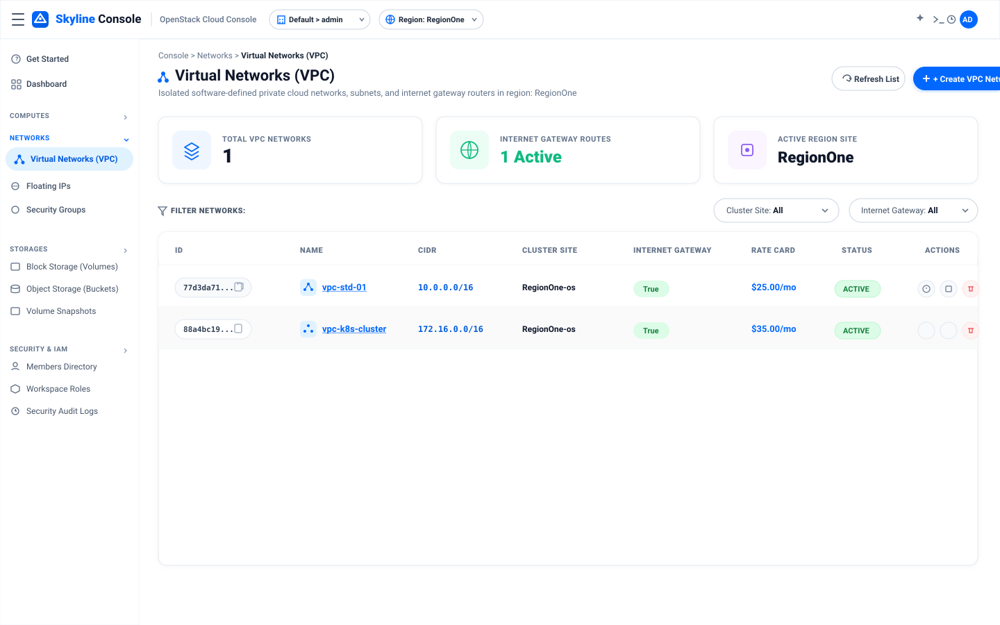

Giao diện hiện đại hóa cho OpenStack Skyline Console theo bố cục chuẩn doanh nghiệp: Header trắng tinh, chip Keystone Project & Region dạng viên thuốc (Pill), Sidebar trắng sắc nét.

Thanh Header trắng, thương hiệu Skyline Console xanh dương, chip chọn Keystone Project (Default > admin) và Region (RegionOne) dạng viên thuốc (Pill), 3 thẻ tổng quan và bảng dữ liệu Neutron VPC.
Sidebar Slate tối `#0F172A`, nền sáng, nút xanh `#1677FF`.
Chế độ Dark Mode hoàn toàn cho ca trực đêm của kỹ sư OpenStack / DevOps.